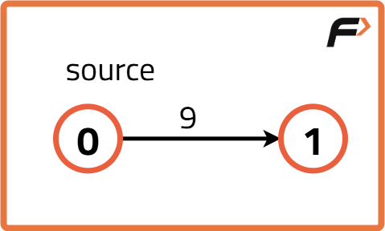
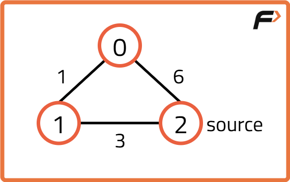
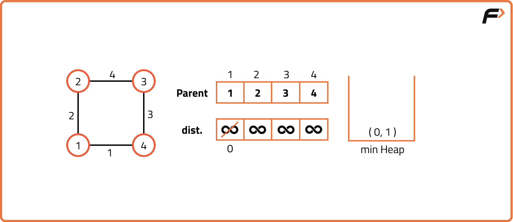
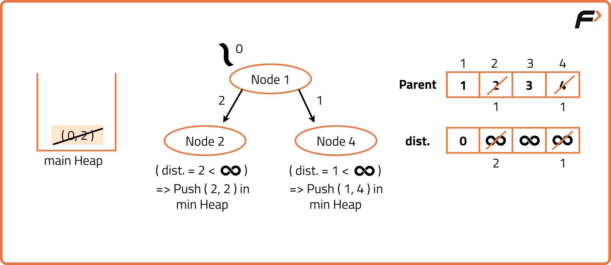
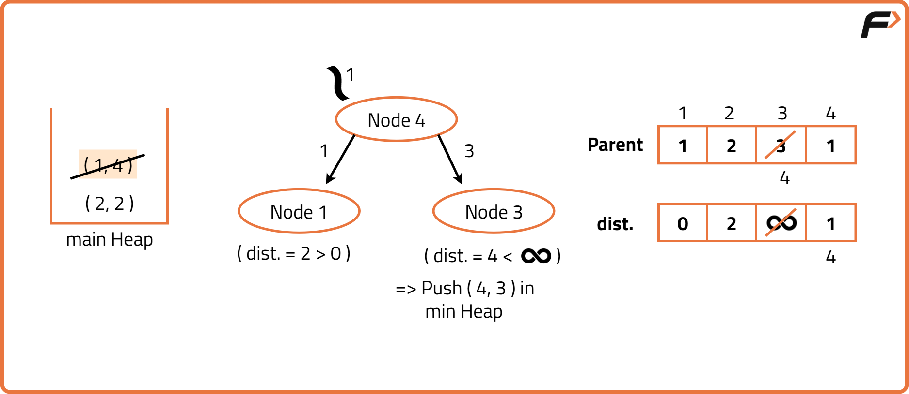
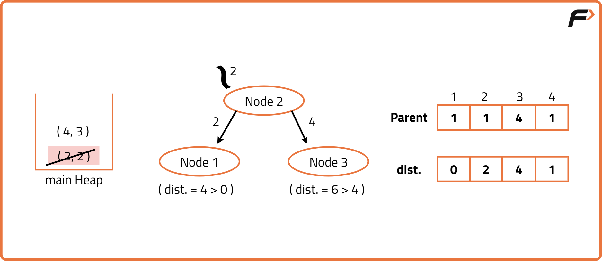
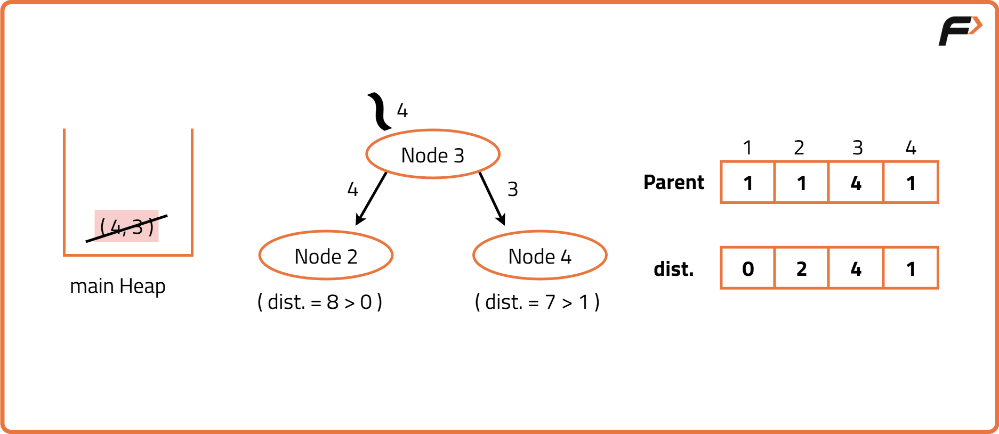

Dijkstra’s Algorithm - Using Priority Queue : G-32
Archived from https://takeuforward.org/data-structure/dijkstras-algorithm-using-priority-queue-g-32/
Problem Statement: Given a weighted, undirected, and connected graph of V vertices and E edges, find the shortest distance of all the vertex's from the source vertex S.
Note: The Graph doesn't contain any negative weight cycle.
Examples
Input : V = 2, E = 1

Output : [0, 9]Explanation : The source vertex is 0. Hence, the shortest distance of node 0 from the source is 0 and the shortest distance of node 1 from source will be 9.Input : V = 3, E = 3

Output : [4, 3, 0]Explanation : For nodes 2 to 0, we can follow the path 2-1-0. This has a distance of 1+3 = 4, whereas the path 2-0 has a distance of 6. So, the Shortest path from 2 to 0 is 4.
Disclaimer:
Here is the practice link to help you assess your knowledge better.
It's highly recommend trying to
solve it before looking at the solution.
Approach
Algorithm
In a weighted graph, the goal of Dijkstra’s algorithm is to find the shortest path from a source node to all other nodes. The idea is to always expand the closest node not yet processed.
Using a priority queue (min-heap) ensures that we can efficiently pick the node with the smallest current distance, instead of scanning all nodes each time.
The algorithm starts with the source node at distance 0. At each step, the priority queue pops the node with the smallest distance. For every neighbor of that node, if the new distance through this node is shorter than the current stored distance, we update it and push the neighbor into the priority queue. This process continues until all nodes are processed.
Initialize a distance array with infinity for all nodes except the source (0).
Use a priority queue (min-heap) to store pairs of (distance, node).
Push the source with distance 0 into the queue.
While the queue is not empty, pop the node with the smallest distance.
If the popped distance is greater than the stored distance, skip it (already processed).
For each neighbor of the current node, calculate the new distance.
If the new distance is smaller than the stored one, update it and push the neighbor into the queue.
After processing, the distance array will hold the shortest path distances from the source to all nodes.





Code
#include <bits/stdc++.h>
using namespace std;
class Solution {
public:
// Function to implement Dijkstra's Algorithm
vector<int> dijkstra(int V, vector<vector<pair<int,int>>>& adj, int src) {
// Distance array initialized to large value
vector<int> dist(V, 1e9);
// Min-heap storing {distance, node}
priority_queue<pair<int,int>, vector<pair<int,int>>,
greater<pair<int,int>>> pq;
// Distance to source is 0
dist[src] = 0;
// Push source into heap
pq.push({0, src});
// Process nodes until heap is empty
while (!pq.empty()) {
// Extract node with minimum distance
int d = pq.top().first;
int node = pq.top().second;
pq.pop();
// Skip if this distance is outdated
if (d > dist[node]) continue;
// Traverse all adjacent neighbors
for (auto it : adj[node]) {
int next = it.first;
int wt = it.second;
// Relaxation check
if (dist[node] + wt < dist[next]) {
// Update distance
dist[next] = dist[node] + wt;
// Push updated distance into heap
pq.push({dist[next], next});
}
}
}
return dist;
}
};
int main() {
// Number of vertices
int V = 5;
// Adjacency list {neighbor, weight}
vector<vector<pair<int,int>>> adj(V);
// Example edges
adj[0].push_back({1, 2});
adj[0].push_back({2, 4});
adj[1].push_back({2, 1});
adj[1].push_back({3, 7});
adj[2].push_back({4, 3});
adj[3].push_back({4, 2});
// Run algorithm
Solution obj;
vector<int> dist = obj.dijkstra(V, adj, 0);
// Print shortest distances
for (int i = 0; i < V; i++) {
cout << "Distance from 0 to " << i << " = " << dist[i] << endl;
}
}
import java.util.*;
class Solution {
// Function to implement Dijkstra's Algorithm
public int[] dijkstra(int V, List<List<int[]>> adj, int src) {
// Distance array initialized to large value
int[] dist = new int[V];
Arrays.fill(dist, (int)1e9);
// Min-heap storing {distance, node}
PriorityQueue<int[]> pq = new PriorityQueue<>((a,b) -> a[0]-b[0]);
// Distance to source is 0
dist[src] = 0;
// Push source into heap
pq.add(new int[]{0, src});
// Process nodes until heap is empty
while (!pq.isEmpty()) {
// Extract node with minimum distance
int[] cur = pq.poll();
int d = cur[0];
int node = cur[1];
// Skip if outdated distance
if (d > dist[node]) continue;
// Traverse all neighbors
for (int[] edge : adj.get(node)) {
int next = edge[0];
int wt = edge[1];
// Relaxation check
if (dist[node] + wt < dist[next]) {
// Update distance
dist[next] = dist[node] + wt;
// Push into heap
pq.add(new int[]{dist[next], next});
}
}
}
return dist;
}
}
public class Main {
public static void main(String[] args) {
// Number of vertices
int V = 5;
// Adjacency list {neighbor, weight}
List<List<int[]>> adj = new ArrayList<>();
for (int i = 0; i < V; i++) adj.add(new ArrayList<>());
// Example edges
adj.get(0).add(new int[]{1, 2});
adj.get(0).add(new int[]{2, 4});
adj.get(1).add(new int[]{2, 1});
adj.get(1).add(new int[]{3, 7});
adj.get(2).add(new int[]{4, 3});
adj.get(3).add(new int[]{4, 2});
// Run algorithm
Solution obj = new Solution();
int[] dist = obj.dijkstra(V, adj, 0);
// Print shortest distances
for (int i = 0; i < V; i++) {
System.out.println("Distance from 0 to " + i + " = " + dist[i]);
}
}
}
import heapq
class Solution:
# Function to implement Dijkstra's Algorithm
def dijkstra(self, V, adj, src):
# Initialize distances
dist = [float('inf')] * V
dist[src] = 0
# Min-heap storing (distance, node)
pq = [(0, src)]
# Process nodes until heap is empty
while pq:
# Extract node with minimum distance
d, node = heapq.heappop(pq)
# Skip if outdated distance
if d > dist[node]:
continue
# Traverse neighbors
for next, wt in adj[node]:
# Relaxation check
if dist[node] + wt < dist[next]:
# Update distance
dist[next] = dist[node] + wt
# Push into heap
heapq.heappush(pq, (dist[next], next))
return dist
# Driver code
V = 5
adj = [[] for _ in range(V)]
# Example edges
adj[0].append((1, 2))
adj[0].append((2, 4))
adj[1].append((2, 1))
adj[1].append((3, 7))
adj[2].append((4, 3))
adj[3].append((4, 2))
# Run algorithm
obj = Solution()
dist = obj.dijkstra(V, adj, 0)
# Print shortest distances
for i in range(V):
print(f"Distance from 0 to {i} = {dist[i]}")
class Solution {
// Function to implement Dijkstra's Algorithm
dijkstra(V, adj, src) {
// Distance array initialized to Infinity
let dist = new Array(V).fill(Infinity);
// Distance to source is 0
dist[src] = 0;
// Min-heap simulated using array
let pq = [[0, src]]; // [distance, node]
// Process nodes until heap is empty
while (pq.length > 0) {
// Extract node with minimum distance
pq.sort((a, b) => a[0] - b[0]);
let [d, node] = pq.shift();
// Skip if outdated distance
if (d > dist[node]) continue;
// Traverse neighbors
for (let [next, wt] of adj[node]) {
// Relaxation check
if (dist[node] + wt < dist[next]) {
// Update distance
dist[next] = dist[node] + wt;
// Push updated distance
pq.push([dist[next], next]);
}
}
}
return dist;
}
}
// Driver code
let V = 5;
let adj = Array.from({ length: V }, () => []);
// Example edges
adj[0].push([1, 2]);
adj[0].push([2, 4]);
adj[1].push([2, 1]);
adj[1].push([3, 7]);
adj[2].push([4, 3]);
adj[3].push([4, 2]);
// Run algorithm
let obj = new Solution();
let dist = obj.dijkstra(V, adj, 0);
// Print shortest distances
for (let i = 0; i < V; i++) {
console.log(`Distance from 0 to ${i} = ${dist[i]}`);
}
Complexity Analysis
Time Complexity: O((V+E)logV), each edge is relaxed at most once, and for each relaxation we may push into the priority queue, giving O(E) pushes with O(log V) heap operations. Space Complexity: O(V+E), additonal space is used to store adjacency list, distance array and priority queue.